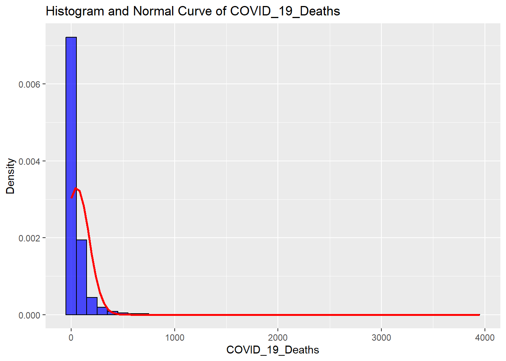
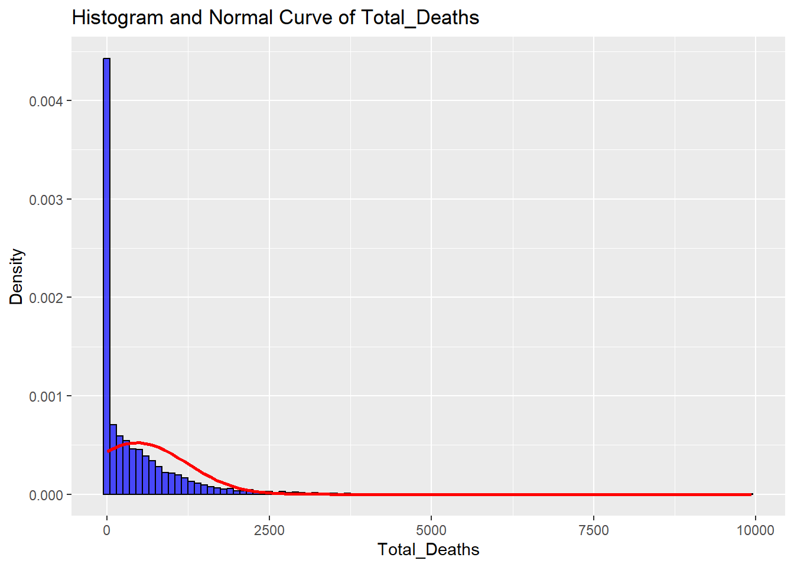
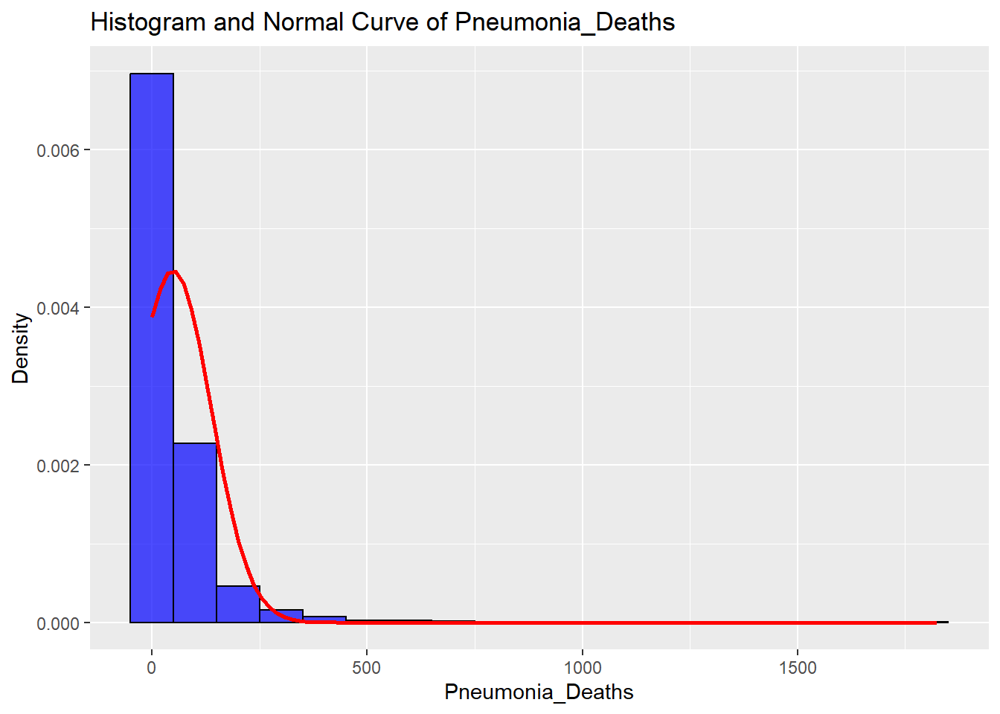
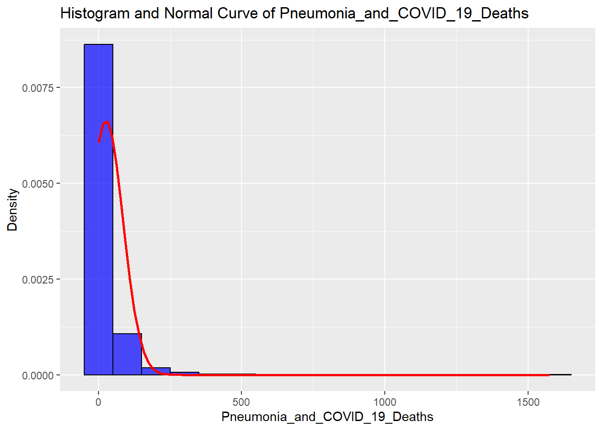
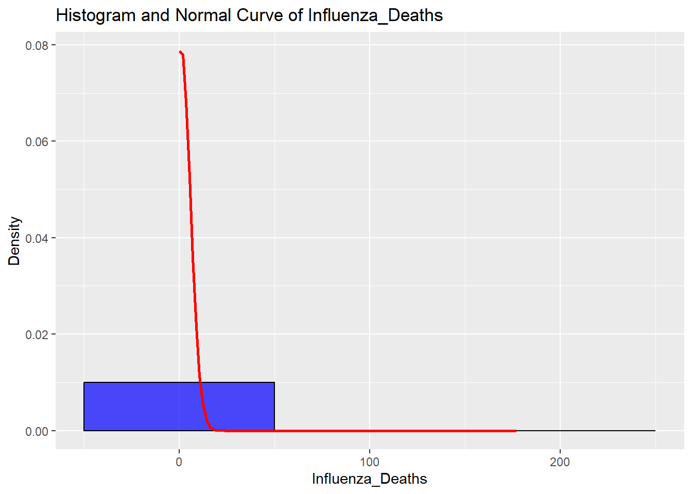
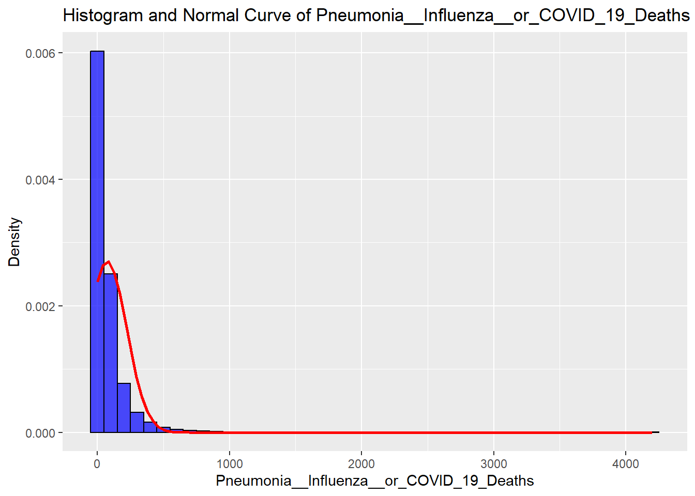

The data set Provisional_COVID-19_Deaths_by_Sex_and_Age_20240703.csv shows data of deaths involving COVID-19, pneumonia, and influenza reported to NCHS by sex, age group, and jurisdiction of occurrence.It was last updated on September 27th, 2023.
library(dplyr)
Attaching package: 'dplyr'
The following objects are masked from 'package:stats':
filter, lag
The following objects are masked from 'package:base':
intersect, setdiff, setequal, union
library(stringr)library(readr)library(ggplot2)
Warning: package 'ggplot2' was built under R version 4.3.3
library(gridExtra)
Attaching package: 'gridExtra'
The following object is masked from 'package:dplyr':
combine
Here is a quick preview of what the data set looks like after importing it.
Data.As.Of Start.Date End.Date Group Year Month State Sex
1 09/27/2023 01/01/2020 09/23/2023 By Total NA NA United States All Sexes
2 09/27/2023 01/01/2020 09/23/2023 By Total NA NA United States All Sexes
3 09/27/2023 01/01/2020 09/23/2023 By Total NA NA United States All Sexes
4 09/27/2023 01/01/2020 09/23/2023 By Total NA NA United States All Sexes
5 09/27/2023 01/01/2020 09/23/2023 By Total NA NA United States All Sexes
6 09/27/2023 01/01/2020 09/23/2023 By Total NA NA United States All Sexes
Age.Group COVID.19.Deaths Total.Deaths Pneumonia.Deaths
1 All Ages 1146774 12303399 1162844
2 Under 1 year 519 73213 1056
3 0-17 years 1696 130970 2961
4 1-4 years 285 14299 692
5 5-14 years 509 22008 818
6 15-24 years 3021 133459 3175
Pneumonia.and.COVID.19.Deaths Influenza.Deaths
1 569264 22229
2 95 64
3 424 509
4 66 177
5 143 219
6 1257 206
Pneumonia..Influenza..or.COVID.19.Deaths Footnote
1 1760095
2 1541
3 4716
4 1079
5 1390
6 5133
Here i changed the columns to be separated with _ instead of . as well as removing any rows containing “NA” as well as removing the footnote column and any row containing the United States instead of the actual state in the “state” column.
The Age_Group column was a mess, so I filtered out the data that seemed to have different age group increments so we only have one age group to go with.
Here is a summary of all the categorical variables I realize that NYC is in New York, however the population density of that city should be noted separately from other reports from the rest of the state.
mean sd
1 51.11816 120.4679
mean sd
1 460.3108 761.6771
mean sd
1 47.75158 89.33372
mean sd
1 25.60993 60.04298
mean sd
1 0.7474879 5.008657
mean sd
1 73.90217 147.5101
Here are corresponding plots for each continuous variable to check for normality.
for (cont_var in cont_vars) { hist_plot <-ggplot(covid_data_subset, aes_string(x = cont_var)) +geom_histogram(aes(y = ..density..), binwidth =100, fill ="blue", alpha =0.7, color ="black") +stat_function(fun = dnorm, args =list(mean =mean(covid_data_subset[[cont_var]], na.rm =TRUE), sd =sd(covid_data_subset[[cont_var]], na.rm =TRUE)), color ="red", size =1) +labs(title =paste("Histogram and Normal Curve of", cont_var),x = cont_var,y ="Density")print(hist_plot)}
Warning: `aes_string()` was deprecated in ggplot2 3.0.0.
ℹ Please use tidy evaluation idioms with `aes()`.
ℹ See also `vignette("ggplot2-in-packages")` for more information.
Warning: Using `size` aesthetic for lines was deprecated in ggplot2 3.4.0.
ℹ Please use `linewidth` instead.
Warning: The dot-dot notation (`..density..`) was deprecated in ggplot2 3.4.0.
ℹ Please use `after_stat(density)` instead.






Here is A Q-Q plot
for (cont_var in cont_vars) { qq_plot <-ggplot(covid_data_subset, aes_string(sample = cont_var)) +stat_qq() +stat_qq_line() +labs(title =paste("Q-Q Plot of", cont_var),x ="Theoretical Quantiles",y ="Sample Quantiles")# Arrange the plots side by sidegrid.arrange(hist_plot, qq_plot, ncol =2) }